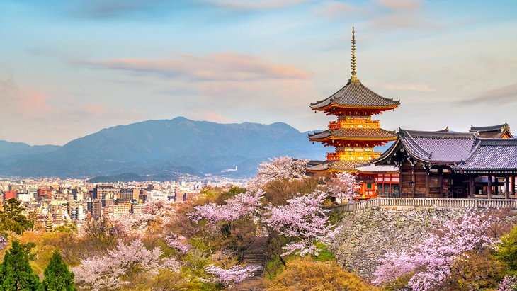
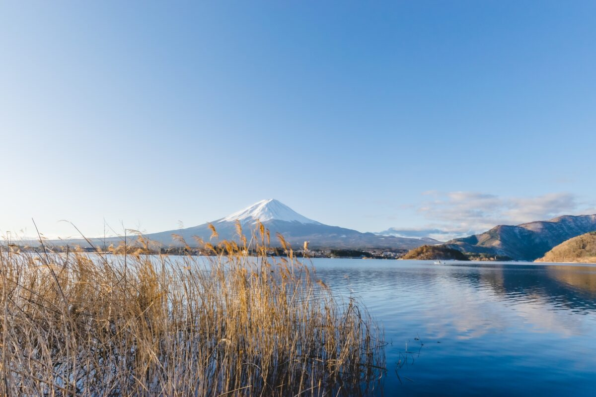
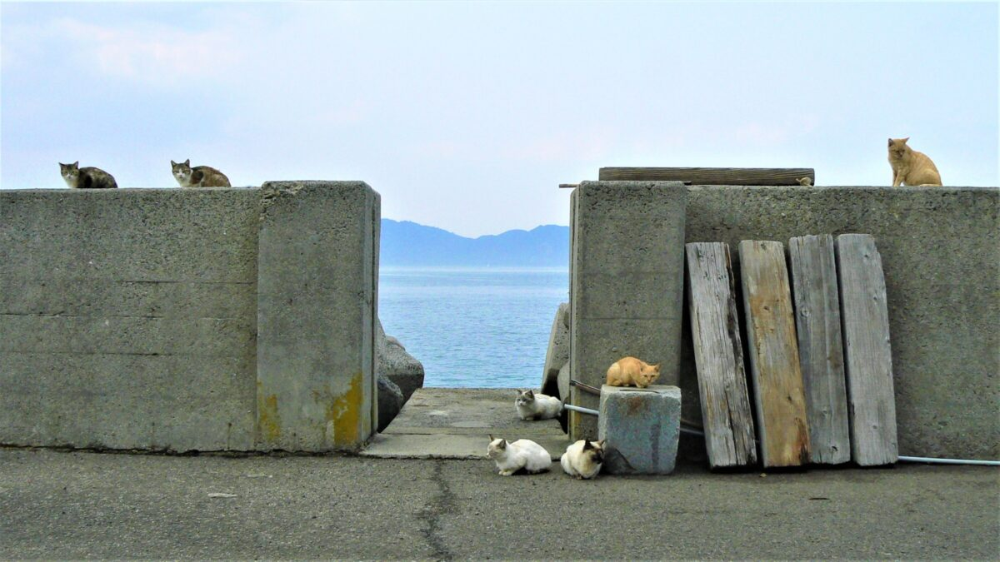

JAPAN
BACK

Kiyomizu-Dera, Kyoto
Within the palace grounds, you can also find the National Palace Museum of Korea and the National Folk Museum of Korea, and both are worth a visit. The palace museum is especially fascinating as it presents items from the palaces of the Joseon Dynasty. This includes priceless antiques and artwork, as well as everyday items for cooking, cleaning, and daily life.

Mount Fuji
Those who do attempt the complete climb are advised to depart in the afternoon, breaking up the climb with an overnight stop at one of the "Mountain Huts" designed for this very purpose. An early start the next day gets you to the top for the sunrise.for many, simply viewing the mountain from the distance, or from the comfort of a speeding train, is enough to say "been there, done that."

Animal islands
Tashiro Island in Miyagi prefecture is known as a cat island where over 100 cats live while only about 60 people live there. There is even a shrine dedicated to cats on the island! Okuno Island in the Seto Inland Sea is a so-called rabbit island where over 900 wild rabbits inhabit having its dark history. The island itself was used to develop gas weapons during the war and hid from the map. The combination of interesting history and adorable rabbits attract many tourists in and outside of Japan.